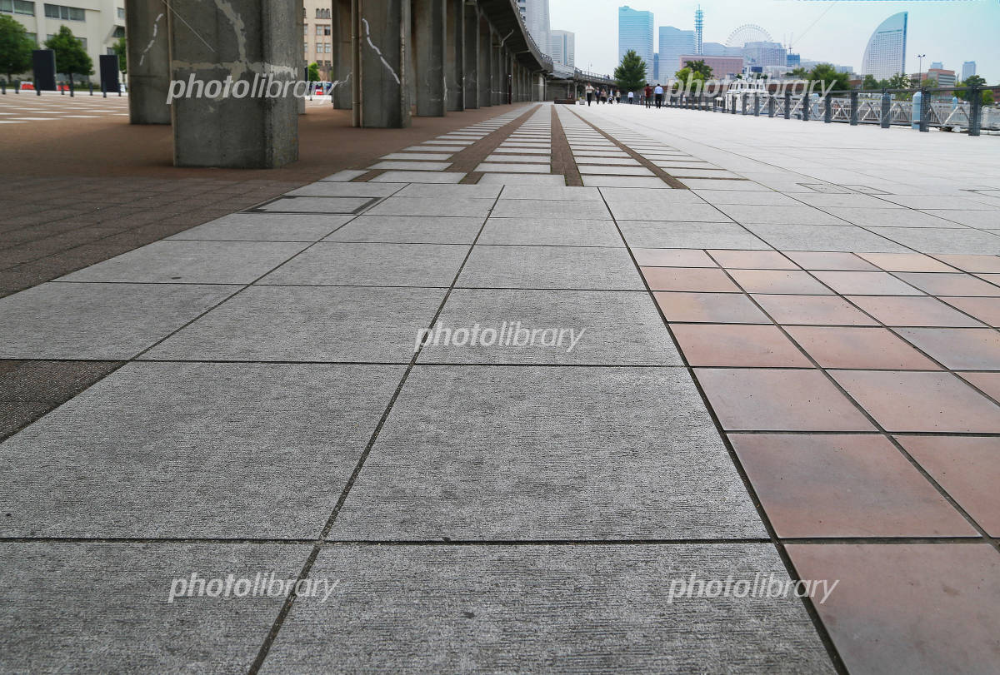
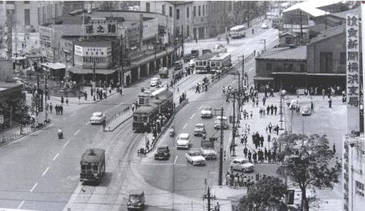
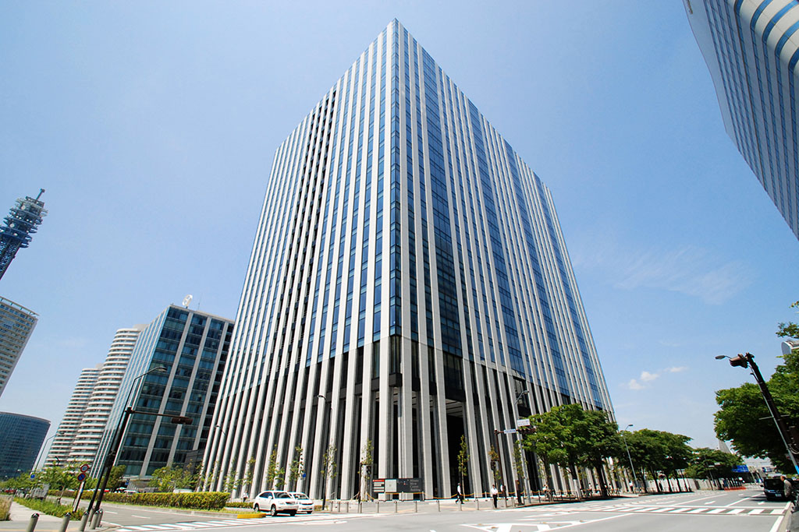
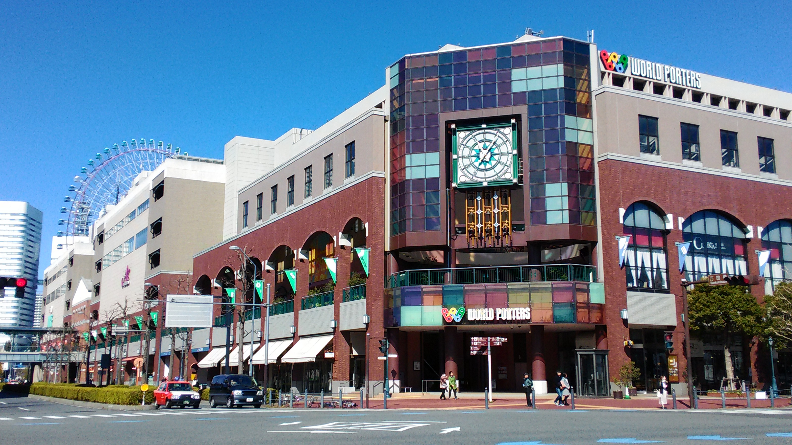
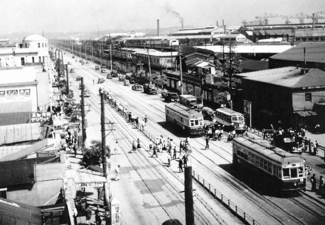
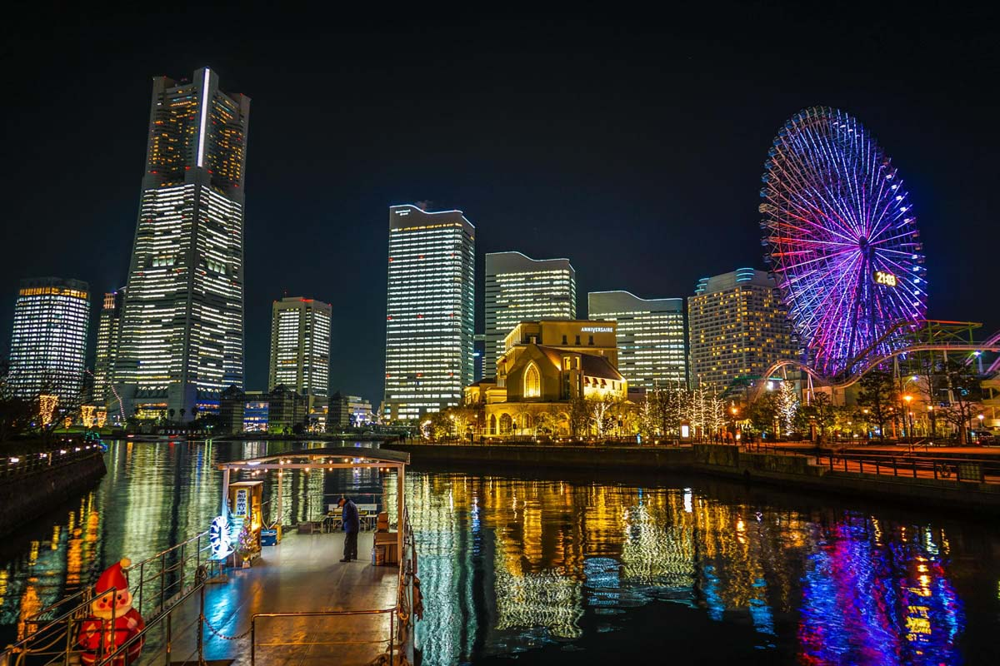
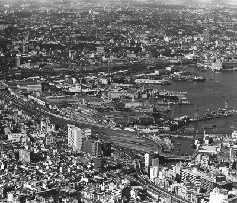
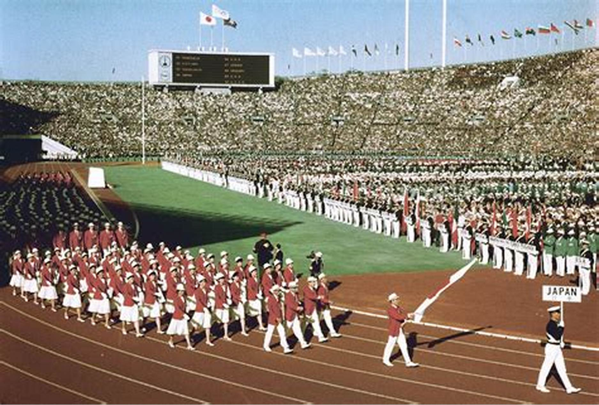
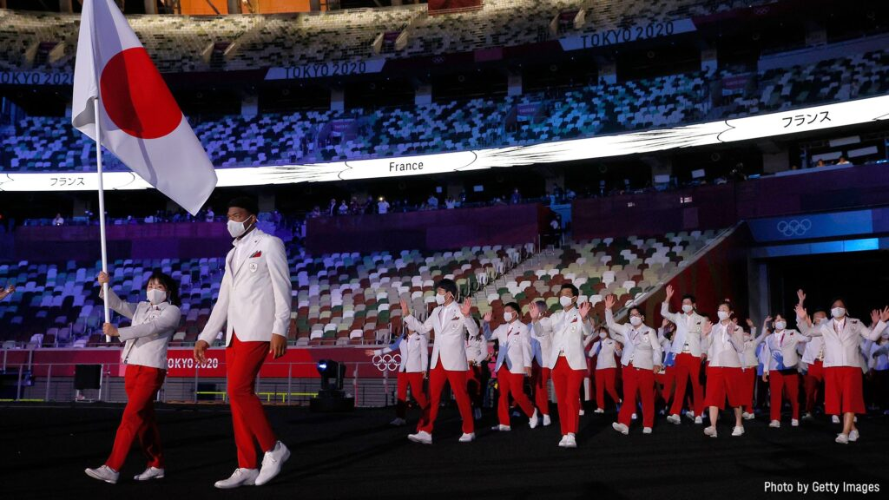

西区在住高齢者への質問リスト
＊ここでいうお父さん、お母さんは来賓してくださった方のことである。
Q1. 路上がコンクリート(タイル)になり始めたのはいつ頃？
Q2.西区（みなとみらい）はいつから大きいビルが建ち始めたのか？

Q3.昔から都会のほうが就職先が多かったのか？
Q4.ワールドポーターズみたいな大型ショッピングモールセンターは当時はあったのか？
Q5.お父さん、お母さんから見て、西区で一番変わったと思うところはどこですか？写真に写っているモノ以外で
Q6.1964年と2020（2021）の東京オリンピックを比べてどちらのほうが盛り上がりがすごかったですか？また、なぜそっちのほう（1964or2020）の盛り上がりがすごかったと思いますか？
Q7.高校や大学へ進学するのは当時あまりいなかったと思いますが、お父さん、お母さん世代の当時も現代みたいに勉強が好きではない子が一定数いましたか？